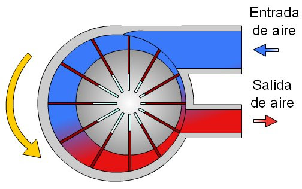
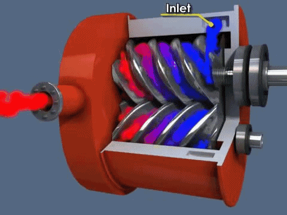
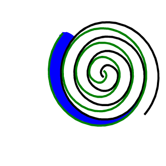
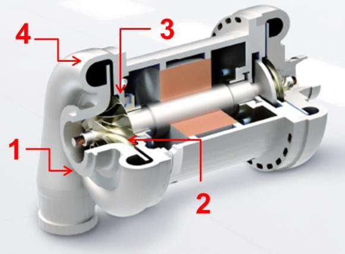

Sesión 2
Para que funcione un circuito neumático, el aire es tomado de la atmósfera, sometido a un aumento de presión (es decir, comprimido) y confinado en un espacio reducido como es un depósito.
Ese aumento de presión produce la condensación del agua presente en la atmósfera, que podría estropear los elementos metálicos del circuito. Asimismo, el aire debe ser filtrado para eliminar las impurezas y, por último, lubricado y regulado para que tenga la presión exacta y necesaria en el circuito.
Todo este proceso constituye la producción y tratamiento del aire comprimido. Los elementos necesarios para llevarlo a cabo son los siguientes:
Compresor
Es el elemento encargado ed elevar la presión del aire (presión atmosférica) hasta la presión de trabajo necesaria.
Según las exigencias referentes a la presión de trabajo y al caudal de suministro, se pueden emplear diversos tipos de construcción. Se distinguen dos tipos básicos de compresores:
- De desplazamiento positivo: El principio de funcionamiento de estos compresores se basa en la disminución del volumen del aire en la cámara de compresión donde se encuentra confinado, produciéndose el incremento de la presión interna hasta llegar al valor de diseño previsto, momento en el cual el aire es liberado al sistema. Dentro de esta categoría encontramos compresores alternativos o rotativos:
- Alternativos: utilizan un pistón que se mueve alternativamente gracias a un mecanismo de biela-manivela y va comprimiendo el aire.

- Rotativos: tienen piezas que se mueven de forma rotativa y fuerzan al aire a estar en un recinto con un volumen cada vez menor, con lo que se comprime. Los más utilizados son:
- De paletas

- De tornillo
- De paletas
- Alternativos: utilizan un pistón que se mueve alternativamente gracias a un mecanismo de biela-manivela y va comprimiendo el aire.

-
-
- De scroll
-

- Compresores dinámicos: El principio de funcionamiento de estos compresores se basa en la aceleración molecular. El aire es aspirado por el rodete a través de su campana de entrada y acelerado a gran velocidad. Después es descargado directamente a unos difusores situados junto al rodete, donde toda la energía cinética del aire se transforma en presión estática. A partir de este punto es liberado al sistema.

Depósito
Estos depósitos están concebidos para acumular aire en su interior y regular el funcionamiento del compresor estabilizando la red de aire comprimido.
 El aire se mantiene en su interior a la presión de trabajo y se va aportando al sistema cuando sea necesario. En el momento en que la presión en el depósito baja de un valor prefijado, se conecta el compresor y se repone el aire necesario hasta recuperar la presión del depósito.
El aire se mantiene en su interior a la presión de trabajo y se va aportando al sistema cuando sea necesario. En el momento en que la presión en el depósito baja de un valor prefijado, se conecta el compresor y se repone el aire necesario hasta recuperar la presión del depósito.
Secador
Sirve para reducir el contenido de vapor de agua existente en el aire. El aire comprimido seco reduce el riesgo de daños por corrosión del sistema de aire comprimido y mejora el presupuesto operativo de la maquinaria y las herramientas conectadas.
Existen diferentes tipos de secado de aire comprimido:
- Secadores de aire refrigerados o secadores frigoríficos: enfrían el aire comprimido hasta su punto de rocío (aproximadamente unos 5°C), temperatura a la que la humedad del aire se condensa después de lo cual se drena. El aire enfriado se recalienta a temperatura ambiente al salir del secador y antes de utilizarlo.
- Secadores de adsorción con desecante: utilizan un medio higroscópico poroso como la alúmina activada y el gel de sílice para extraer la humedad del aire y secarla. Los secadores de aire de adsorción son más adecuados para el secado en una segunda etapa, de lo contrario, el medio higroscópico se saturaría rápidamente. Esto significa que suelen ser el segundo paso después de un secado con otro sistema como un secador frigorífico.
- Secadores de adsorción delicuescentes: al igual que otros secadores de adsorción, pasan el aire a través de un medio higroscópico para secarlo, paro, a diferencia de los secadores de aire con desecante, los secadores de aire delicuescentes utilizan tabletas de sal solubles en lugar de un medio sólido que necesita regeneración. La salmuera resultante necesita ser drenada y las tabletas reemplazadas cada cierto tiempo.
- Secadores de membrana: como su nombre indica, pasa aire entrante sobre una membrana higroscópica para eliminar la humedad. El aire se acumula en la membrana hasta que migra a través del otro lado, que es de baja presión. Un gas seco es entonces atravesado, llevando la humedad lejos para la expulsión. A menudo son secadoras de segunda o incluso tercera etapa.
Filtro
Se utiliza para filtrar las impurezas del aire atmosférico, como el polvo, el aceite y la humedad, a fin de que el aire comprimido sea viable para su uso.
Al igual que los secadores de aire, son una parte crucial del proceso de tratamiento del aire para asegurarse de que el aire comprimido está limpio y es seguro de usar, y para aumentar la vida útil del equipo.
Los filtros de línea de aire más comunes y sus principios básicos de funcionamiento son:
- Filtros de partículas: eliminan el polvo y otras partículas del aire después de la compresión, atrapándolas y reteniéndolas dentro del compresor de aire. A menudo se combinan con el secador de aire de adsorción.
- Filtros de aire de carbón activo: eliminan los gases y olores del aire con un medio de carbono compuesto. Estos filtros se utilizan a menudo en la industria alimentaria y para respirar gas.
- Filtros de aire coalescentes: filtran el aceite y las partículas de agua del aire y las condensan en una masa que se puede limpiar fácilmente. A diferencia de los separadores de Aceite-Agua, los filtros de aire coalescentes sólo eliminan la humedad y los aerosoles de aceite, no el líquido real.
- Filtros de admisión de aire comprimido: eliminan los contaminantes microscópicos del aire, así como las posibles partículas químicas.
Regulador de presión
Tiene por objeto mantener el aire a una presión constante, que se determine como necesaria, evitando las variaciones que pueda ocasionar el consumo de aire de la instalación. Los reguladores de presión suelen incorporar un manómetro.
Se usan cuando el aire comprimido entrante debe regularse a un valor deseado y preestablecido, independiente de las condiciones externas y del funcionamiento de otros equipos.
Algunos ejemplos de activos industriales que necesitan regulación de aire son:
- Pistolas de soplado
- Equipo de medición de aire
- Cilindros de aire
- Motores de aire
- Dispositivos de pulverización
- Sistemas de lubricación en aerosol
Lubricador
En su interior se mezcla el aire con aceite, para intentar aumentar la vida útil y el rendimiento de los circuitos neumáticos. Evita la corrosión y detiene el desgaste de piezas.
Los aceites se utilizan cuando las herramientas neumáticas, los controles neumáticos, etc. deben operar con una cantidad determinada de aceite para evitar el desgaste prematuro por exceso de fricción.
La mayoría de las herramientas neumáticas y otros equipos impulsados por aire necesitan de lubricación periódica para extender su durabilidad.
En los circuitos neumáticos, cada uno de estos elementos tiene un símbolo que puedes ver a continuación:

Como ves, al conjunto del filtro, el regulador de presión y el lubricador se le conoce con el nombre de Unidad de mantenimiento FRL (filtro, regulador, lubricador), ya que se suele instalar como una unidad compacta que se encarga de realizar esas funciones. Esta unidad de mantenimiento tiene su propio símbolo para representarla como un único elemento en los circuitos neumáticos:

Como los elementos de acondicionamiento de aire aparecen en todos los circuitos y siempre son los mismos, el conjunto de todos ellos se suele representar mediante un símbolo simplificado que se conoce como fuente de presión:
Cuando veas este símbolo en un circuito, ¡recuerda que tiene mucho más detrás que "simplemente" aportar aire a presión!